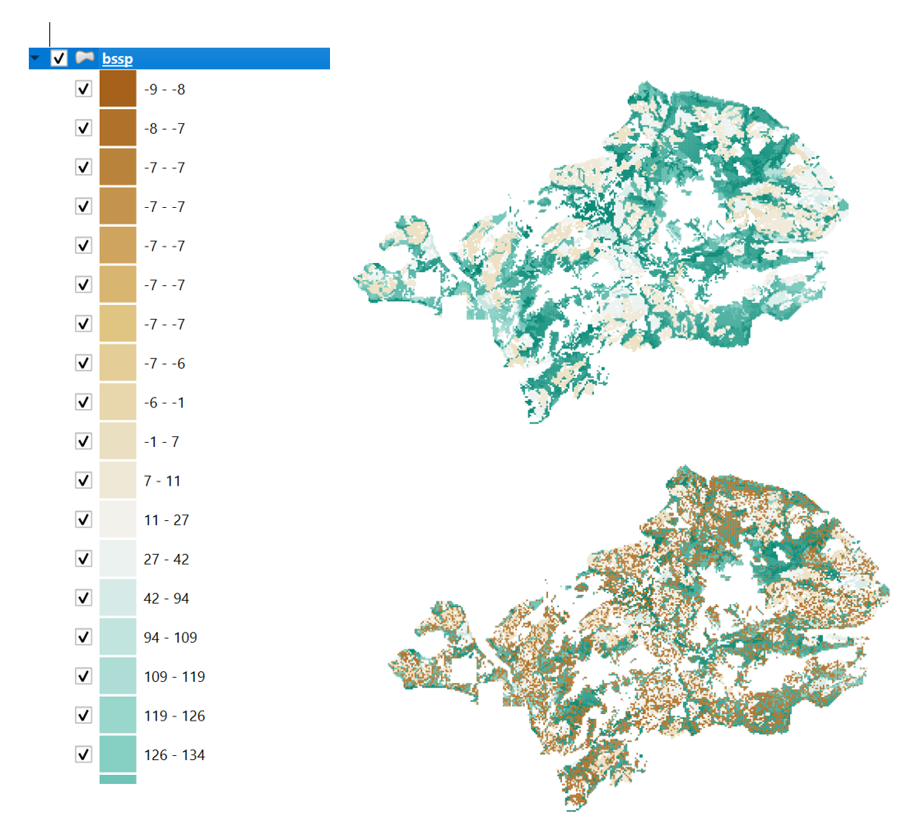
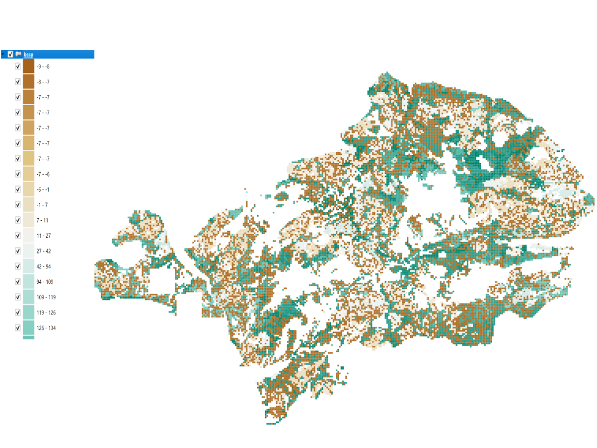
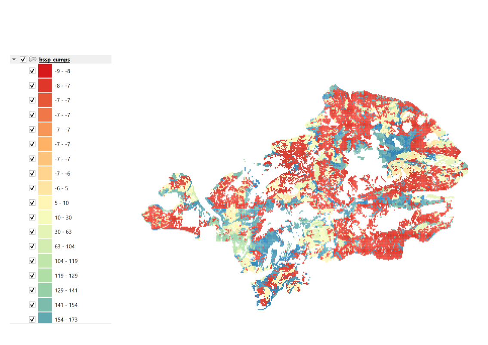

16 Appendix #2: Patchworks Fire Adjustments
16.1 Introduction
The following is a first approximation of a standard methodology developed to adjust initial stand ages and initial analysis units (AU) for a vector/Patchworks environment to more accurately reflect the impacts of recent wildfires. The process follows a similar approach used by Dr. Andrew Fall in STSM for the Bulkley/Morice timber supply review. The adjustments respond to limitations in how wildfires are represented in the annual Vegetation Resources Inventory (VRI) update and the resulting VDYP natural stand yield tables (NSYTs).
Although the VRI process applies burn‑severity mapping to reduce basal area, stems per hectare, and crown closure, it does not reset stand age or height. Consequently, burned stands may appear artificially “old” in modelling, while their VDYP projections reflect reduced volumes from a surviving over-story. This mismatch creates several modelling challenges: burned stands may never reach minimum harvest volumes, may persist indefinitely on weakened yield curves, and may contribute to forest cover constraints as if they were undisturbed. Its also important for the analyst to consider the effects of inventory adjustments on yield prior to defining a model’s landbase. Adjusted yields may inadvertently exclude areas that would otherwise form part of the Timber Harvesting Landbase.
To address these issues, a three‑part adjustment methodology was developed:
Reassignment of Analysis Units(AUs): Stands requiring correction—such as burned unmanaged stands and AUs that incorrectly represent managed yields—are reassigned to a representative AU. Stands are grouped by key attributes, and a representative AU is selected based on proximity to the group’s median CMAI. This (in essence) re-establishes a pre-existing median productivity condition across the fire perimeter.
Stand adjustment identification : Within each burned area, spatially patterns of “replacement” and “non-replacement” are generated using percentage targets by burn severity and stochastic age reassignment procedures.
Adjustment of initial stand age and AU: For stands identified for replacement (based on severity class), age is reset to years since fire, with optional regeneration delays. Burned unmanaged stands and older managed stands are reassigned to representative AU values to place them on appropriate VDYP curves.
Together, these steps correct inconsistencies between VRI, VDYP, and actual on‑the‑ground fire impacts, ensuring that modelled stands behave realistically over time. The approach preserves initial growing stock while enabling accurate long‑term projections of stand dynamics, harvest availability, and forest cover indicators.
16.2 Process Summary
This pipeline does the following:
- Reads volumes from postgres and calculates CMAI and decade of max CMAI per AU.
- Loads remaining data (select ARD fields, gr_skey spatial, age and yield) from postgres
- Extracts Burn Severity and RESULTS Opening datasets from BC Data Warehouse
- Loads MSYT managed forest data; calculates species-specific site index and labels for planted and natural species.
- Creates site index classes for VRI, planted, and natural species.
- Determines leading species and site index class per cell.
- Aggregates by bec_zone, si_class, lead_spp to compute median CMAI and assign aggregate IDs.
- Identifies the AU closest to median CMAI for each aggregate.
- Within fire perimeters resets AUs for natural stands to aggregate and for managed stands that are free to grow
- For each polygon within a fire calculates the mean proportion burned then assigns an adjusted age base on Bernoulli trial
- The process results in a dataframe with reassigned ages and AUs that links to gr_skey
- Finally we review the result spatially
Adjustment assumptions:
- Non-free going managed stands assumed to be replanted so only ages adjusted based on severity class (stays on current AU)
- All other stands with fire boundary have AUs reassigned based on aggregations, ages adjusted randomly based on severity %
- 10 year regen. delay post fire: fire_age = 2025-year of fire-10 year regen delay
- Assumes analysis ready gridded data (resultant and gr_skey tables at 1ha resolution) have been loaded to the local postgres database
- Assumes yield table exists in the postgres database in wide format and each feature_id in the AFLB has a curve (standard STSM ready structure)
- Assumes provincial ages for the unit have been loaded to the local postgres database
- Utilizes the Results Opening table from the BC Data Warehouse to determine Free Growing Status
- Utilizes the MSYT_current_input.csv for managed stand aggregation parameters
- Utilizes the unit’s analysis ready dataset for natural stand aggregation parameters
- Assumes sequential AU numbering (ascending) matching sequential feature_id (ascending) as per standard yield mash-up (current/future, managed/natural) for STSM
Limitations
- The process does not address yield curve input adjustments made during the mountain pine beetle epidemic. (representative AU selection excludes MPB impacted stands). Adjustments for MPB impacted stands will be the focus of the second approximation.
- The aggregation technique (bec zone,leading_sp,broad si clases) is purposely coarse to limit class sizes. More sophisticated clustering algorithms may yield superior results and will be the focus of the second approximation.
- Access to the BBC Data Warehouse (via the bcdata package) may be limited to users within the bc government. External users may need to source some input data through other means.
16.2.1 Step 1: Calculate CMAI
The first step is to derive the CMAI for each feature in the inventory. CMAI will be used to identify representative analysis units for substitution within the fires. The following code chunk reads the yield table into a dataframe, then calculates a CMAI value for each row by dividing all columns (except au and 0) by the numeric portion of their column names (each column is identified by decade) and storing the results in new _modified columns. It then finds the maximum of these modified values per row (CMAI) and identifies which column (age decade) produced that maximum (CMAI_decade). Finally, it keeps only au, CMAI, and CMAI_decade for later use.
Code
yield_query<-"select * from tsa05_yield;"
yield<-dbGetQuery(db,yield_query)
yield <- yield %>%
mutate(across(where(is.numeric), ~replace_na(., 0)))
#The following creates new columns (MVtotal_*) by adding each MVcon_* column to its corresponding MVdec_* column (matched by the same numeric suffix).
yield <- yield %>%
mutate(
across(
.cols = matches("^MVcon_\\d+$"),
.fns = ~ . + get(str_replace(cur_column(), "con", "dec")),
.names = "MVtotal_{str_extract(.col, '\\\\d+$')}"
)
)
#subset
yield_totals <- yield %>%
select(
au,
feature_id,
starts_with("MVtotal_")
)
# calculate decadal cmai
cmai <- yield_totals %>%
mutate(across(
.cols = -c(au, feature_id, MVtotal_0),#ignore the au and 0 column
.fns = ~ . / as.numeric(gsub("\\D", "", cur_column())),#extract the numeric portion of the field name as the denominator
.names = "{col}_modified"# add modification suffix
)) %>%
rowwise() %>% #switch to rowwise function
mutate(
CMAI = max(c_across(ends_with("_modified")), na.rm = TRUE),#select the max CMAI from across the records columns
CMAI_decade = which.max(c_across(ends_with("_modified"))) # Get index of the column with max CMAI = age decade
) %>%
ungroup()
##################################################################################
# #create AU join table with CMAI which will be used for aggregation
cmai <- cmai %>%
select(au, CMAI, CMAI_decade)%>%arrange(au)
pretty_table(head(cmai))16.2.2 Step 2: Master Dataframe
The following code chunk builds a master spatial key (skey_df) table by extracting AU, geographic reference spatial key (gr_skey), and age values from provincial age table, and joining them together along with previously calculated cmai values. It then filters the dataset to forested cells using an the proxy AFLB from the AR resultant in postgres (users can substitute their netdown AFLB if its available but the proxy is a suitable substitute until the landbase is finalized). Next, the script queries extracts the historic and current burn severity data for the specified TSA from the BC Data warehouse, combines the datasets, converts categorical burn severity ratings to numeric percentages, and finally joins this burn severity information to the skey table by gr_skey. Although the burn severity variables are also included in the analysis ready dataset they lack the Objectid field necessary to assign values to individual burn polygons rather than each hectare. Each approach is demonstrated below. In order to utilize the units boundary to “clip” the burn severity data using data in the warehouse you need the org unit code (in the case TSA05 falls within the Rocky Mountain Resource District (DRM)). Alternatively, you could create a sf object using the ‘bnd’ layer in your AR gdb and use that as the cookiecutter to extract the burn severity from the warehouse.
Code
################################### get AU/skey############################################
#start the skey master table using existing rasters derived from unit's postgres db (resultant)
#########################################################################################
skey_query<-"select * from tsa_05_gr_skey;"
skey<-st_read(db,query = skey_query)
skey_df<-st_drop_geometry(skey)
ar_query<-"select gr_skey, feature_id,proxy_aflb,bec_zone, open_id, site_index, spec_cd_1, dvltot_125 from tsa_05_resultant where proxy_aflb is not null;"
ar<-dbGetQuery(db,ar_query)
skey_df<-ar%>%
inner_join(skey_df,
join_by("gr_skey"))
skey_df<-yield%>%
select(feature_id,au,source)%>%
inner_join(skey_df,
join_by("feature_id"))
skey_df<-cmai%>%
inner_join(skey_df,
join_by("au"))
age_query<- "select * from tsa05_age;"
age<-dbGetQuery(db,age_query)
skey_df<-age%>%
select(gr_skey,age2026)%>%
inner_join(skey_df,
join_by("gr_skey"))#1484893
######################################################################################
# add burn severity
####################################################################################
# This snippet pulls the historic and current year burn severity data for a specific district (DRM) from the data warehouse using the bcdata package, then intersects it with the skey sf object to assign fire attributes to each gr_skey.It resolves overlapping fire polygons by keeping the highest burn severity per key, and repeats the process for a second burn severity dataset before combining both sources; it then converts categorical burn severity ratings into numeric percentage values (bs_pct) based on predefined assumptions and finally joins this aggregated burn severity information back into the main dataset (skey_df) for further analysis.
# get cookie cutter for the unit from data warehouse
drm <- bcdc_query_geodata("natural-resource-nr-district") %>%
filter(ORG_UNIT=="DRM") %>% # filter for District
collect()
#check cookie cutter
drm %>%
ggplot() +
geom_sf() +
theme_minimal()
drm
bs<-
bcdc_query_geodata("c58a54e5-76b7-4921-94a7-b5998484e697") %>%
filter(INTERSECTS(drm))%>%
select(FIRE_NUMBER,FIRE_YEAR,BURN_SEVERITY_RATING,OBJECTID)%>%
collect()%>%
clean_names()
bs_skey<-st_intersection(bs,skey)%>%
st_drop_geometry()%>%
select(-veg_fs_sysid)
#clean overlaps
bs_skey<- bs_skey %>%
mutate(burn_severity_rating = factor(burn_severity_rating, levels = c("Low", "Medium", "High", "Unburned"), ordered = TRUE)) %>%
group_by(gr_skey) %>%
slice_max(burn_severity_rating) %>%
ungroup()
bs_skey<- bs_skey %>%
distinct(gr_skey, .keep_all = TRUE)
#-------------------------------------------------------------------------------
bssy <-
bcdc_query_geodata("04c5ad28-d8eb-4c49-90c5-48b9b98fdfe9") %>%
filter(INTERSECTS(drm))%>%
select(FIRE_NUMBER,FIRE_YEAR,BURN_SEVERITY_RATING,OBJECTID)%>%
collect()%>%
clean_names()
bssy_skey<-st_intersection(bssy,skey)%>%
st_drop_geometry()%>%
select(-brn_svy_sy_sysid)
bssy_skey<- bssy_skey %>%
mutate(burn_severity_rating = factor(burn_severity_rating, levels = c("Low", "Medium", "High", "Unburned"), ordered = TRUE)) %>%
group_by(gr_skey) %>%
slice_max(burn_severity_rating) %>%
ungroup()
bssy_skey<- bssy_skey %>%
distinct(gr_skey, .keep_all = TRUE)
bs_agg<-rbind(bs_skey,bssy_skey)
#deal with any overlap
#severity class assumptions
bs_agg<-bs_agg%>%mutate(bs_pct = case_when(
burn_severity_rating == 'Unburned' ~ 10,
burn_severity_rating == 'Low' ~ 25,
burn_severity_rating =='Medium' ~ 50,
burn_severity_rating == 'High' ~ 80,
TRUE ~ 0
))
#join to master df
skey_df <- left_join(skey_df, bs_agg, join_by("gr_skey"))
pretty_table(head(skey_df))16.2.3 Step 3: Species and SI
The following code chunk prepares species and site index fields for aggregation. It reads managed stand data, then for planted openings determines the lead planted species, dynamically retrieves its corresponding site index column, filters to planted records, and standardizes species labels into broader species groups. It repeats the same process for natural (non-planted) openings. It then queries a database to identify openings that are not free-to-grow, and separately retrieves VRI aggregation fields (e.g., BEC zone, site index, leading species) by gr_skey. Finally, it joins these VRI attributes and opening status information to the master skey dataset for later aggregation.
Code
##################################################################################
################# managed fields for aggregation###################################
###################################################################################
# managed fields for aggregation#
#
#opening species and si
managed <- read_csv("C:\\Data\\temp\\tsa05\\tsa5\\MSYT_current_input.csv")
#determine lead species and its associated si
planted <- managed %>%
rowwise() %>%
mutate(
planted_species1_si = if (is.na(planted_species1)) {
NA_real_ #return NA
} else {
col <- paste0(tolower(planted_species1), "_si")#convert to matching si column header for if
if (col %in% names(cur_data())) cur_data()[[col]] else NA_real_ # if the label matches then get the value
}
) %>%
ungroup() %>%
filter(!is.na(planted_species1)) %>% #just planted
select(feature_id, planted_species1, planted_species1_si) %>%
mutate(
spc_lbl_pl = case_when( #relabel and consolidate
grepl("A.", planted_species1) ~ "sAt",
grepl("P.", planted_species1) ~ "sPl",
grepl("S.", planted_species1) ~ "sS",
grepl("F.", planted_species1) ~ "sFd",
grepl("L.", planted_species1) ~ "sFd",
grepl("B.", planted_species1) ~ "sB",
grepl("C.", planted_species1) ~ "sCw",
grepl("H.", planted_species1) ~ "sH",
TRUE ~ "sDecid"
# TRUE ~ "unknown"
)
)
# do the same for features in openings identified as naturals
natural <- managed %>%
filter(planted_percent == 0) %>%
rowwise() %>%
mutate(
natural_species1_si = if (is.na(natural_species1)) {
NA_real_
} else {
col <- paste0(tolower(natural_species1), "_si")
if (col %in% names(cur_data())) cur_data()[[col]] else NA_real_
}
) %>%
ungroup() %>%
select(feature_id, natural_species1, natural_species1_si) %>%
mutate(
spc_lbl_nat = case_when(#re-label and consolidate
grepl("A.", natural_species1) ~ "sAt",
grepl("P.", natural_species1) ~ "sPl",
grepl("S.", natural_species1) ~ "sS",
grepl("F.", natural_species1) ~ "sFd",
grepl("L.", natural_species1) ~ "sFd",
grepl("B.", natural_species1) ~ "sB",
grepl("C.", natural_species1) ~ "sCw",
grepl("H.", natural_species1) ~ "sH",
TRUE ~ "sDecid"
# TRUE ~ "unknown"
)
)
openings <-
bcdc_query_geodata("53a17fec-e9ad-4ac0-95e6-f5106a97e677") %>%
filter(INTERSECTS(drm))%>%
select(OPENING_ID,OPENING_CATEGORY_CODE,MGMT_UNIT_DESCRIPTION)%>%
collect()%>%
st_drop_geometry()%>%
filter(OPENING_CATEGORY_CODE %notin% c("FG","RET"))%>%
select(open_id = OPENING_ID,open_cat = OPENING_CATEGORY_CODE)
skey_df<-left_join(skey_df, openings, join_by("open_id"))#1484893
##################################################################################16.2.4 Step 4: Aggregation Fields
The following code chunk finalizes aggregation fields in the skey dataset by classifying site index (SI) values and determining leading species. It first replaces missing VRI site index values with 0 and groups them into 10-point SI classes. It then joins planted and natural species data, similarly replacing missing SI values and assigning SI classes for each. VRI leading species codes are consolidated into broader species groups. Finally, it creates unified fields: si_class, which prioritizes planted SI class, then natural, then VRI; and lead_spp, which similarly prioritizes planted species, then natural, then VRI. The result is a harmonized dataset ready for aggregation by species and site productivity class.
Code
##############################################################################
############## bring it all together and create aggregate classes###############
################################################################################
#classify si
skey_df <- skey_df %>% mutate(
site_index = case_when(
is.na(site_index) ~ 0,
TRUE ~ site_index
),
si_class10_vri = case_when(
between(site_index, 1, 10) ~ 1,
between(site_index, 11, 20) ~ 2,
between(site_index, 21, 30) ~ 3,
site_index > 30 ~ 4,
TRUE ~ 0
)
)
#join master df
skey_df <- left_join(skey_df, planted, join_by("feature_id"))
#classify planted si
skey_df <- skey_df %>% mutate(
planted_species1_si = case_when(
is.na(planted_species1_si) ~ 0,
TRUE ~ planted_species1_si
),
si_class10_pl = case_when(
between(planted_species1_si, 1, 10) ~ 1,
between(planted_species1_si, 11, 20) ~ 2,
between(planted_species1_si, 21, 30) ~ 3,
site_index > 30 ~ 4,
TRUE ~ 0
)
)
#join master df
skey_df <- left_join(skey_df, natural, join_by("feature_id"))
#classify natural si
skey_df <- skey_df %>% mutate(
natural_species1_si = case_when(
is.na(natural_species1_si) ~ 0,
TRUE ~ natural_species1_si
),
si_class10_nat = case_when(
between(natural_species1_si, 1, 10) ~ 1,
between(natural_species1_si, 11, 20) ~ 2,
between(natural_species1_si, 21, 30) ~ 3,
site_index > 30 ~ 4,
TRUE ~ 0
)
)
#re-label and consolidate vri spec_cd_1
skey_df <- skey_df %>% mutate(
spc_lbl_vri = case_when(
grepl("A.", spec_cd_1) ~ "sAt",
grepl("E.", spec_cd_1) ~ "sDecid",
grepl("E", spec_cd_1) ~ "sDecid",
grepl("B.", spec_cd_1) ~ "sB",
grepl("B", spec_cd_1) ~ "sB",
grepl("C.", spec_cd_1) ~ "sCw",
grepl("F.", spec_cd_1) ~ "sFd",
grepl("L.", spec_cd_1) ~ "sFd",
grepl("H.", spec_cd_1) ~ "sH",
grepl("H", spec_cd_1) ~ "sH",
grepl("P.", spec_cd_1) ~ "sPl",
grepl("S.", spec_cd_1) ~ "sS",
grepl("S", spec_cd_1) ~ "sS",
TRUE ~ "sDecid"
# TRUE ~ "unknown"
)
)
skey_df <- skey_df %>% mutate(
si_class = case_when(
!is.na(planted_species1) ~ si_class10_pl,
!is.na(natural_species1) ~ si_class10_nat,
TRUE ~ si_class10_vri
),
lead_spp = case_when(
!is.na(planted_species1) ~ spc_lbl_pl,
!is.na(natural_species1) ~ spc_lbl_nat,
TRUE ~ spc_lbl_vri
)
)16.2.5 Step 5: Find Aggregates
The following sequence groups the landbase into ecological aggregates defined by BEC zone, site index class, and leading species, and assigns each combination a unique agg_id. Within each aggregate, it calculates a reference median CMAI value using only unburned areas (where fire_year is NA) to represent typical productivity under undisturbed conditions. If no unburned areas exist within an aggregate, it falls back to the median calculated from all areas in that aggregate, and if that is also unavailable, to a broader BEC-level median. This selected median (agg_med_cmai) is then used to identify the AU whose CMAI is closest to the reference value. That AU becomes the representative or replacement condition for the aggregate, allowing burned areas to be reassigned productivity and age characteristics based on comparable unburned forest conditions.
Code
################################################################################
# Create aggregate ID
################################################################################
nb <- skey_df %>%
group_by(bec_zone, si_class, lead_spp) %>%
mutate(agg_id = cur_group_id()) %>%
ungroup()
nb_mpb<-nb%>%
filter(is.na(fire_year)& is.na(dvltot_125))
################################################################################
# Compute medians
################################################################################
# Primary: unburned and nonMPB only
med_unburned <- nb_mpb %>%
group_by(agg_id) %>%
summarise(
med_unburned = median(CMAI, na.rm = TRUE),
.groups = "drop"
)
# Fallback 1: all records
med_all <- nb %>%
group_by(agg_id) %>%
summarise(
med_all = median(CMAI, na.rm = TRUE),
.groups = "drop"
)
# Fallback 2: BEC-level (unburned and nonMPB)
med_bec <- nb_mpb %>%
group_by(bec_zone) %>%
summarise(
med_bec = median(CMAI, na.rm = TRUE),
.groups = "drop"
)
################################################################################
#Join and apply fallback logic
################################################################################
#Use the unburned median if it exists.
#If not, use the full aggregate median.
#If that’s also missing, use the BEC-level median.
skey_df <- nb %>%
left_join(med_unburned, by = "agg_id") %>%
left_join(med_all, by = "agg_id") %>%
left_join(med_bec, by = "bec_zone") %>%
mutate(
agg_med_cmai = coalesce(med_unburned, med_all, med_bec)#coalesce() returns the first non-NA value from left to right
)
################################################################################
# Find AU closest to chosen median
################################################################################
closest_au <- skey_df %>%
filter(!is.na(agg_med_cmai)) %>%
group_by(agg_id) %>%
slice_min(abs(CMAI - agg_med_cmai), n = 1, with_ties = FALSE) %>%
ungroup() %>%
select(agg_id, agg_au = au, CMAI_closest_to_med = CMAI)
skey_df <- skey_df %>%
left_join(closest_au, by = "agg_id")16.2.6 Step 6: Reset Ages and AUs
The next steps adjusts AU and age values for areas affected by fire. It first assigns a final_au, resetting to an aggregate AU where a fire occurred and the stand is not free-to-grow, and initializes fire-related adjustment fields. It then isolates fire-affected records, calculates the mean burn severity per fire polygon, and applies a Bernoulli trial (based on mean burn severity percentage) to randomly determine whether each cell’s age should be adjusted. Fire records are temporarily removed and then reattached to the master dataset, and a final_age is calculated—reducing age to (2025 − fire_year − 10) where the adjustment is triggered, otherwise keeping the original age.
Code
# Reset AUs to aggregate where there is fire and managed stands > free to grow
skey_df<-skey_df%>%mutate(
final_au = case_when(
!is.na(fire_number) & is.na(open_cat) ~ agg_au,
TRUE ~ au),
mean_adjust = 0,#default no age adjustment
fire_num_mean_pct = 0 # default no fire pct
)
#subset the fire records from the master df
#reset ages in fires based on Bernoulli trial (size =1)
fires<- skey_df%>%
filter(!is.na(fire_number))%>% #in a fire perimeter
group_by(objectid) %>% #individual burn severity polygons within the fire perimeter
mutate(fire_num_mean_pct= mean(bs_pct)) %>%
ungroup()%>%
mutate(
mean_adjust = rbinom(n = n(),
size = 1,
prob = fire_num_mean_pct/100))
#antijoin - remove the records with fires from the master df
skey_df<-anti_join(skey_df,fires,join_by(gr_skey))
#bind_rows - add the fires back into the master df
skey_df<-(bind_rows(skey_df,fires))%>%
arrange(gr_skey)
#final age
skey_df<-skey_df%>%mutate(
final_age= case_when(
!is.na(fire_year) & !is.na(open_cat) ~ 2026-fire_year - 2, #2 year delay in non F2G blocks in fires
mean_adjust == 1 ~ 2026-fire_year - 10,#10 year regen delay for all other
TRUE ~ age2026
)
)
x <- skey_df %>% # display fires
ungroup()%>%
filter(!is.na(fire_year))%>%
slice_sample(n = 25)
pretty_table(x)16.2.7 Step 7: View Spatial
The final step is the review the spatial output.
Code
The following image contrast the non adjusted ages to adjusted ages in a specific fire in TSA41

And here’s a closer view of the distribution of adjusted ages in the fire.

As a first approximation the process does a reasonable job re-establishing appropriate yields and ages with fire perimeters. One limitation is the interior patch shapes tend to be more “randomized/speckled” rather than the preferred “clumped” shape.
If desired more clumped shapes can be captured at the polygon level by recycling the original severity polygons rather than adjusting individual hectares within the polygon. The following workflow simulates fire occurrence at the polygon level and produces a spatial output of affected patches. First, skey_fire is grouped by objectid (fire polygon), and within each polygon the mean burn severity (bs_pct) is calculated and stored as fire_num_mean_pct; a unique polygon identifier (fire_poly_id) is assigned, a burn probability is derived by dividing the mean severity by 100 (mean_prob), and a single Bernoulli draw (mean_adjust) is generated per polygon to simulate whether that polygon burns. Based on this simulated outcome, final_age is updated so that burned polygons have their age reset to years since fire (2025 − fire_year − 10), while unburned polygons retain their original age.
Code
skey_fire <- bs_att %>%
select(-mean_adjust,-fire_num_mean_pct,-final_age)%>%
group_by(objectid) %>%
mutate(
fire_num_mean_pct= mean(bs_pct),
fire_poly_id = cur_group_id(),#cur_group_id() returns an integer (1, 2, 3, …) identifying which group each row belongs to.
mean_prob = mean(fire_num_mean_pct / 100),
mean_adjust = rbinom(1, size = 1, prob = mean_prob),
final_age = case_when(
mean_adjust == 1 ~ 2026-fire_year - 10,
TRUE ~ age2026 )) %>%
ungroup()
bssp2<-inner_join(skey,skey_fire,join_by("gr_skey"))
st_write(bssp2,"./data/shp/bssp2_patches.gpkg",
overwrite = TRUE)
….more to come